From Clutter to Clarity: Improving a Time Series Chart
A step-by-step demo
Christophe Bontemps (SIAP)
The Typical Excel Chart

Problems:
- Too many colours
- Markers on every point
- Heavy gridlines
- Large legend
- Visual overload
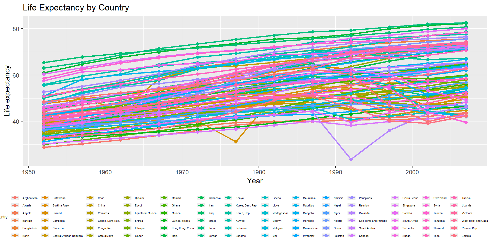
Remove to improve
Remove points to focus on lines (trends).
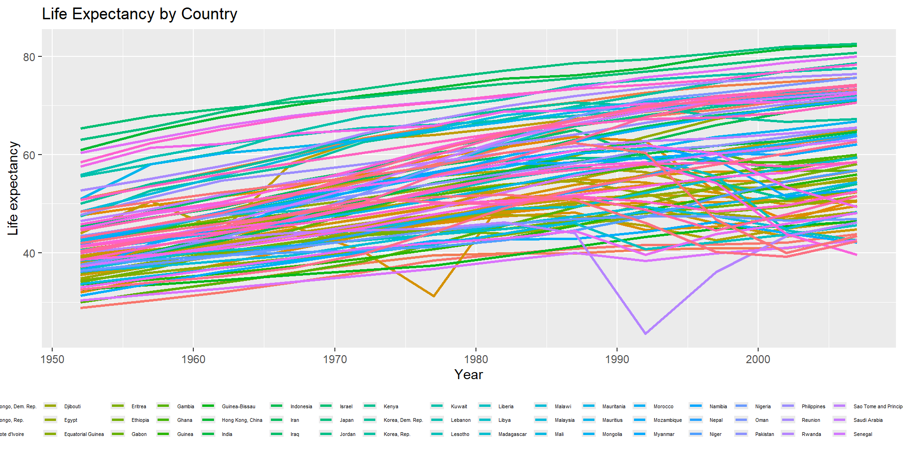
Reduce Visual Noise
Lighter gridlines and cleaner theme.
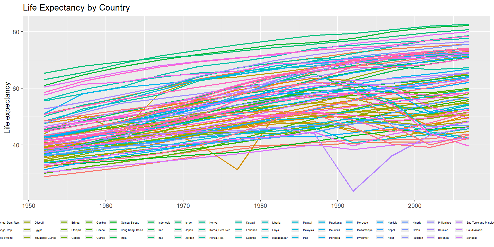
Remove the Rainbow
Color should communicate meaning, or help…
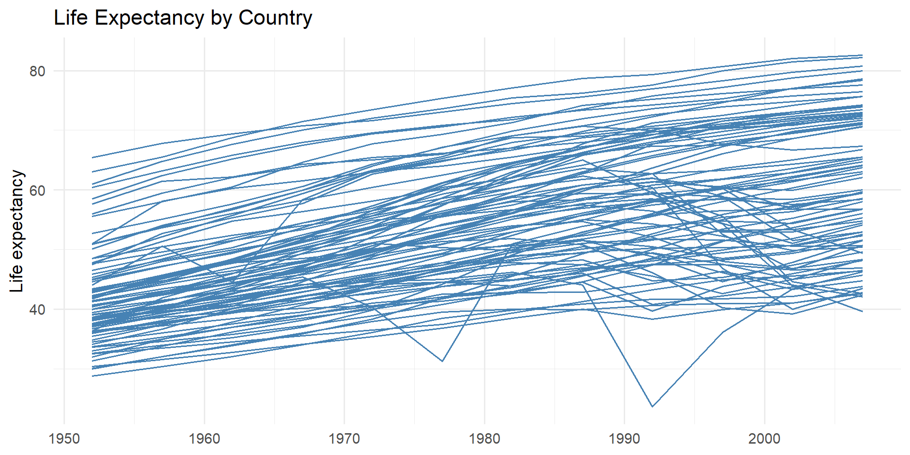
Remove Borders & Grids
Focus attention on the data, not on the grid.
Highlight Regions
Use color to encode information (from data).
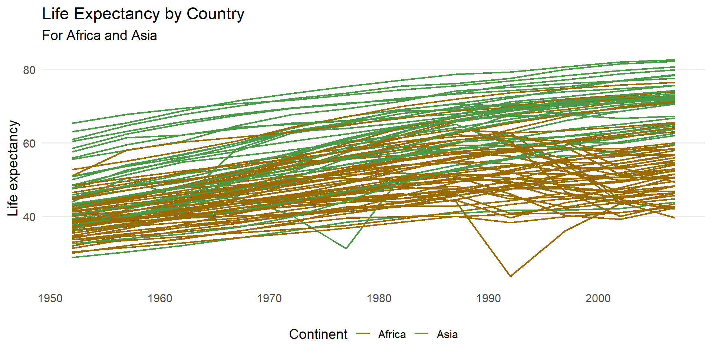
Be inclusive
About 7% of men are colorblind. They see this:
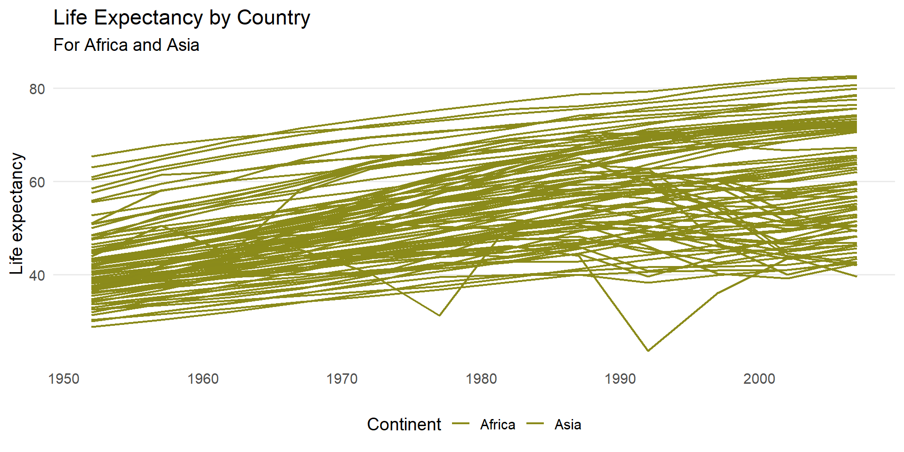
Be inclusive
Use a color blind friendly palette.
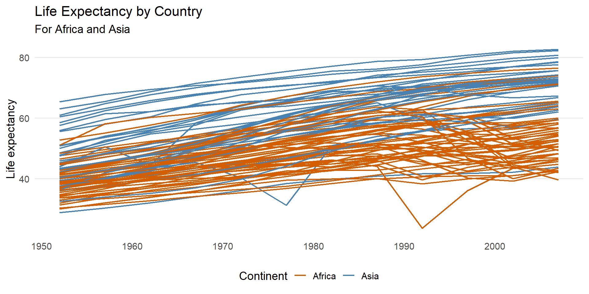
Also using “small multiple” graphics
Less lines is more information
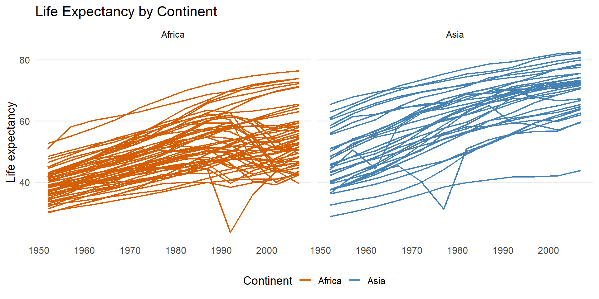
Remove legend (not needed)
Avoid redundancy
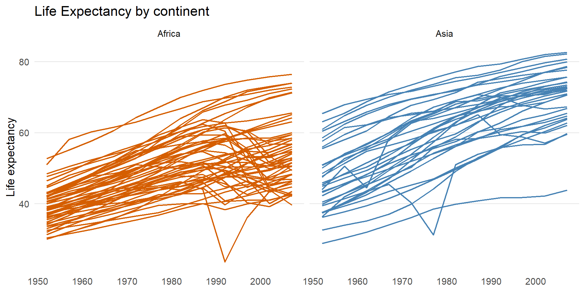
Use interactivity
Helps identifying, not delivering a message
Ask a Question
How has a specific country (Rwanda) evolved?
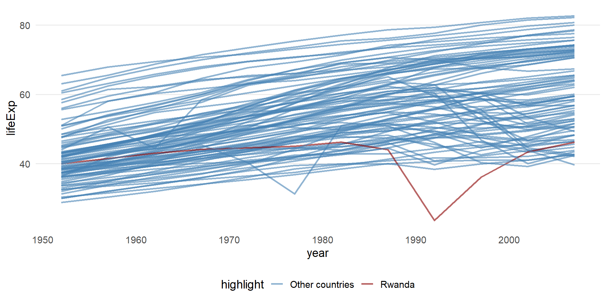
Identify patterns
“Le gris est mon ami”: Grey other lines as references
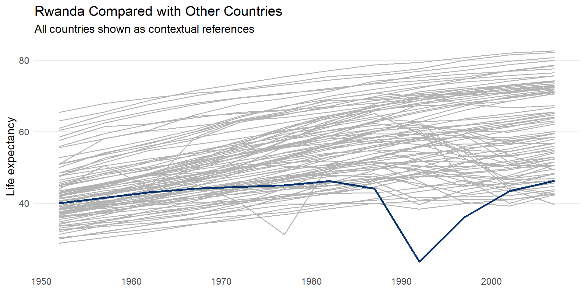
Use transparency
Overlapping transparent lines reveal patterns
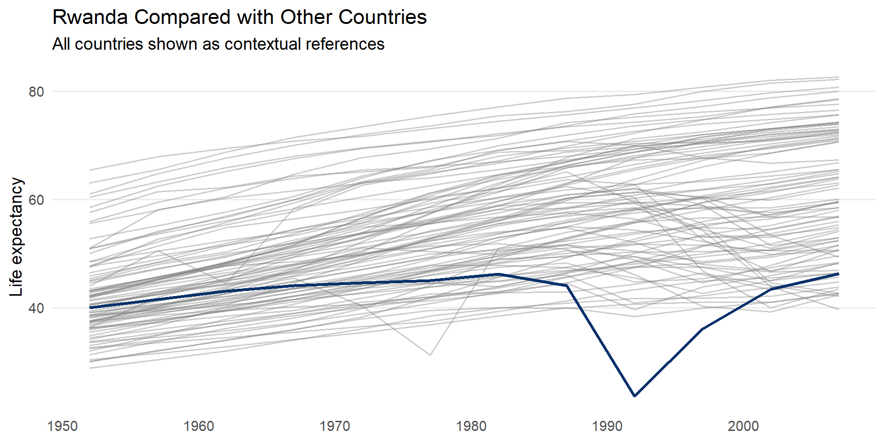
Direct Labelling
Provide labels close to information
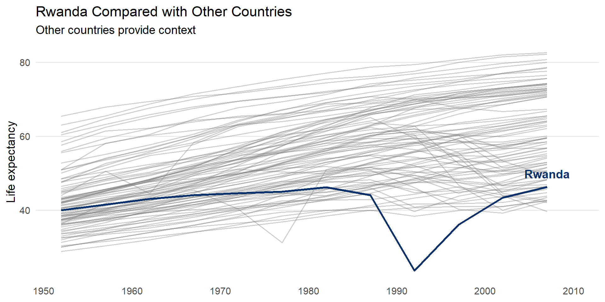
Refine and annotate
Titles and annotations should guide the reader and tell stories!
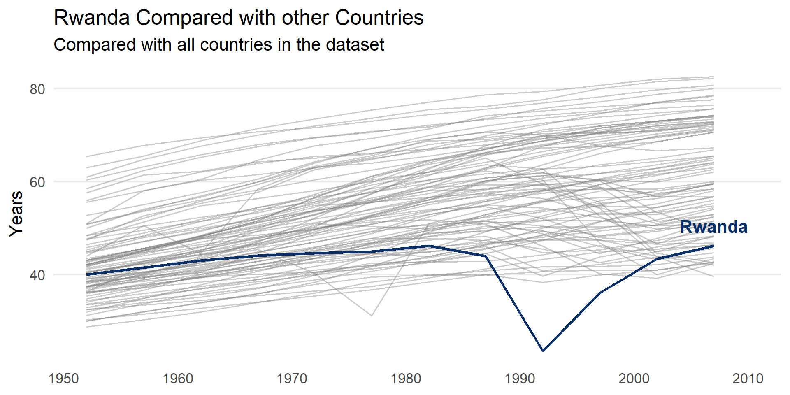
Use anotations
Context always help the reader
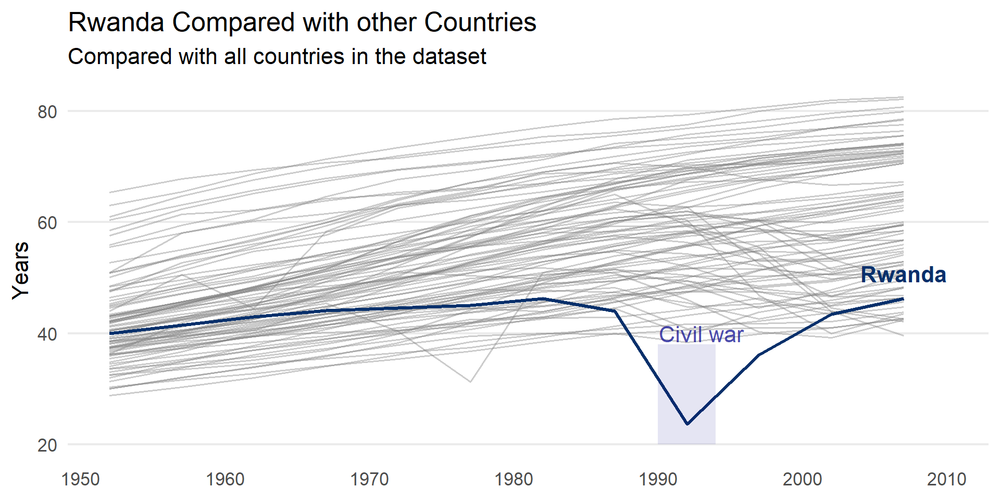
Provide a useful title
And mention source!

Before/after
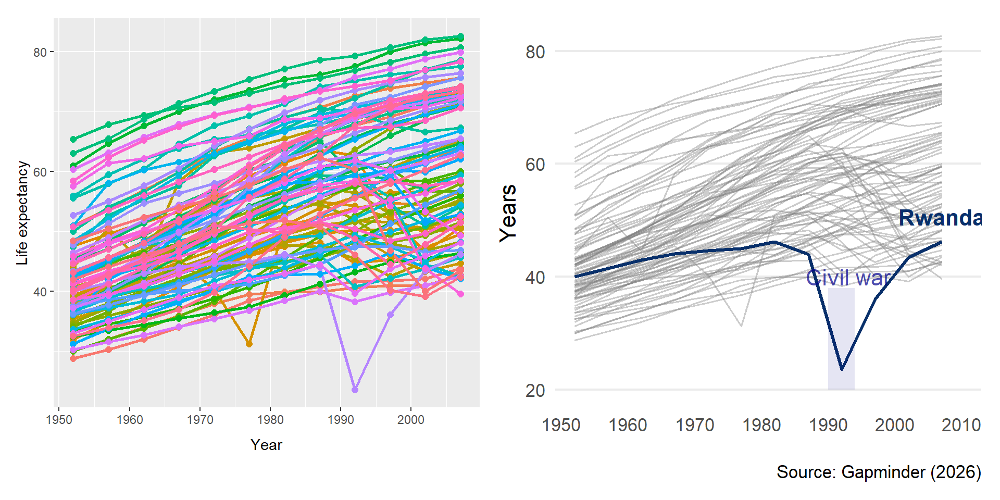
Before

After
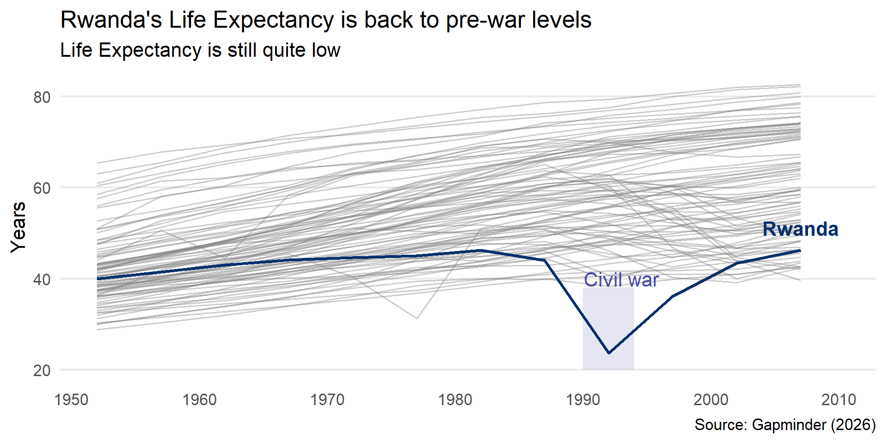
Bonus: Use analytics to detect stories
Detecting trends & highlighting countries
Identifying shocks
Use analytics to detect swift declines
| country | event_label | prev_year | prev_life | year | lifeExp | delta_life |
|---|---|---|---|---|---|---|
| Rwanda | Rwanda (1987→1992) | 1987 | 44.020 | 1992 | 23.599 | -20.421 |
| Zimbabwe | Zimbabwe (1992→1997) | 1992 | 60.377 | 1997 | 46.809 | -13.568 |
| Lesotho | Lesotho (1997→2002) | 1997 | 55.558 | 2002 | 44.593 | -10.965 |
| Swaziland | Swaziland (1997→2002) | 1997 | 54.289 | 2002 | 43.869 | -10.420 |
| Botswana | Botswana (1992→1997) | 1992 | 62.745 | 1997 | 52.556 | -10.189 |
| Cambodia | Cambodia (1972→1977) | 1972 | 40.317 | 1977 | 31.220 | -9.097 |
| Namibia | Namibia (1997→2002) | 1997 | 58.909 | 2002 | 51.479 | -7.430 |
| South Africa | South Africa (1997→2002) | 1997 | 60.236 | 2002 | 53.365 | -6.871 |
Higlight shocks
Select the most dramatic declines
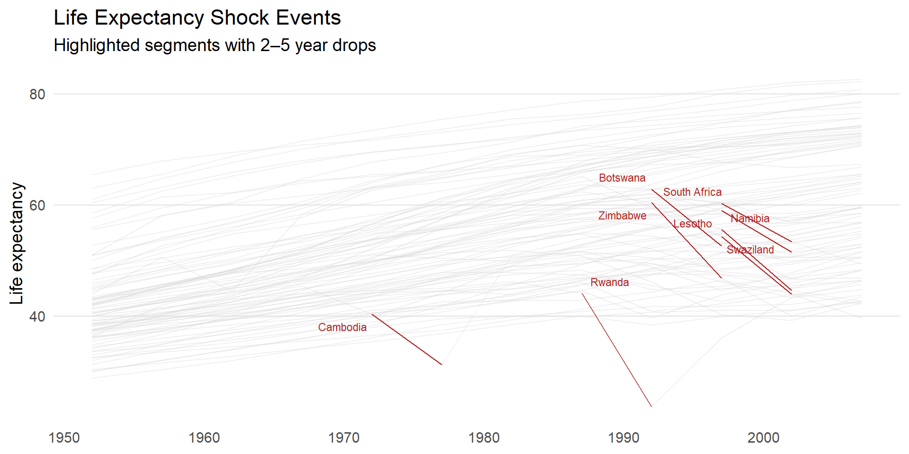
A better story?
Now we have stories, on different continents…
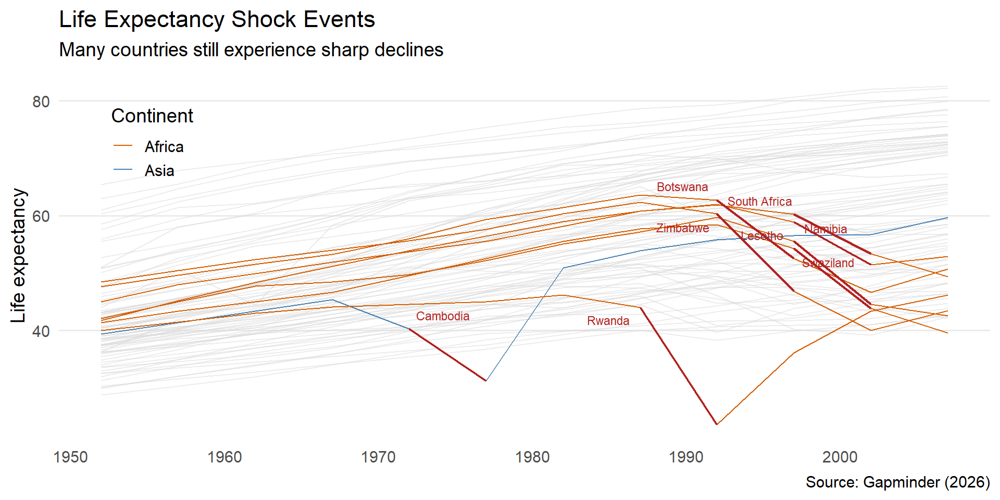
Takeaways
- Remove unnecessary ink
- Too many colors (Color is not decoration)
- Simplify background
- Use grey
- Use small multiples
- Refine, refine
- Identify a question
- Direct labeling
- Use analytics!
Tell the story, not the data set!
Christophe Bontemps - SIAP